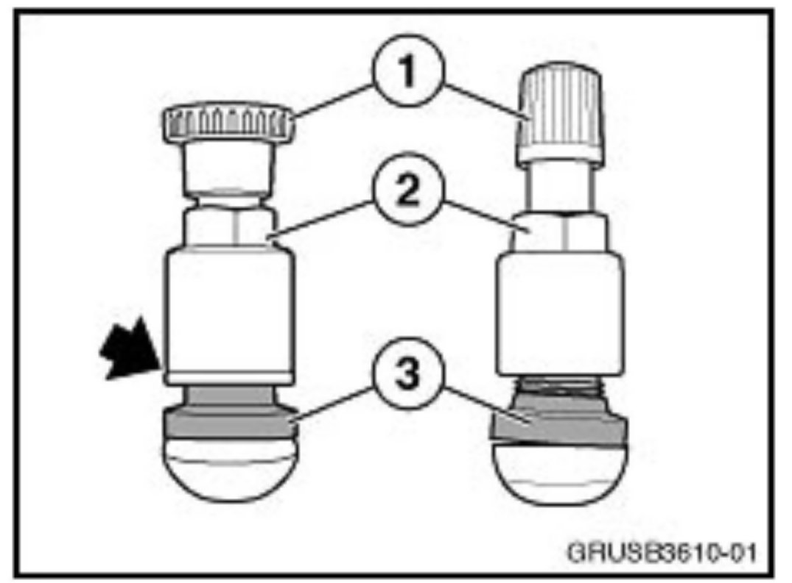

Wheel/Tires - New Style Tire Valves
SI B36 01 10Wheels and Tires
November 2010
Technical Service
SUBJECT
New Style Tire Valves
MODEL
All
INFORMATION

The tire valves for use with Tire Pressure Monitor Systems have been redesigned. The new style valves (on the right in the illustration) can be identified by the smaller/conventional type cap (1) and the tapered seat at the valve's base (3).
^ The sealing washer (indicated by the arrow) is no longer required with the new style valve.
^ The valve has been modified in the area of the rubber seal (3).
^ The only component which is interchangeable between the two valves is the valve cap (1). When replacing a tire valve, the old cap can be reused, if necessary, to ensure that all the tire valves are fitted with matching caps.
^ Always refer to the Repair Manual for proper installation instructions, including tightening torques.
WARRANTY INFORMATION
For information only